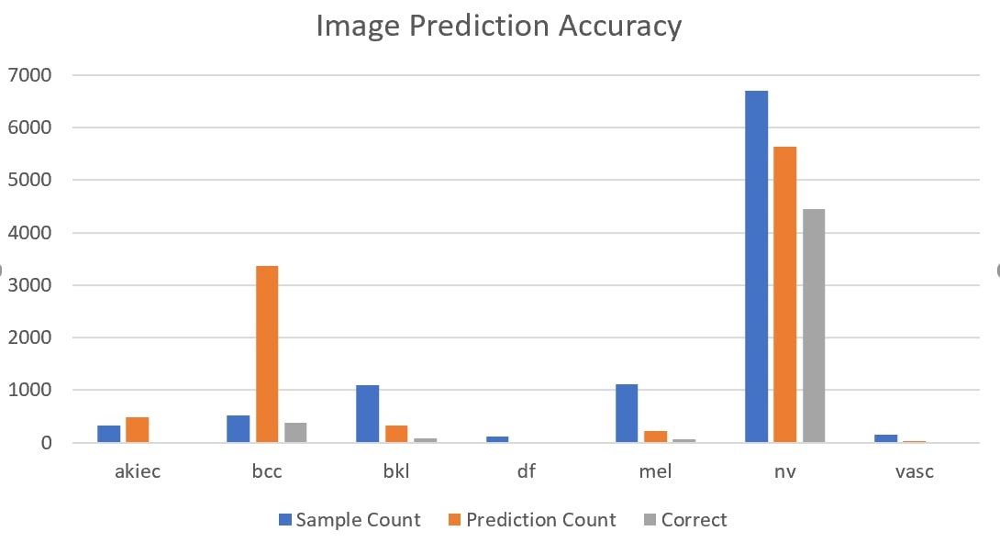
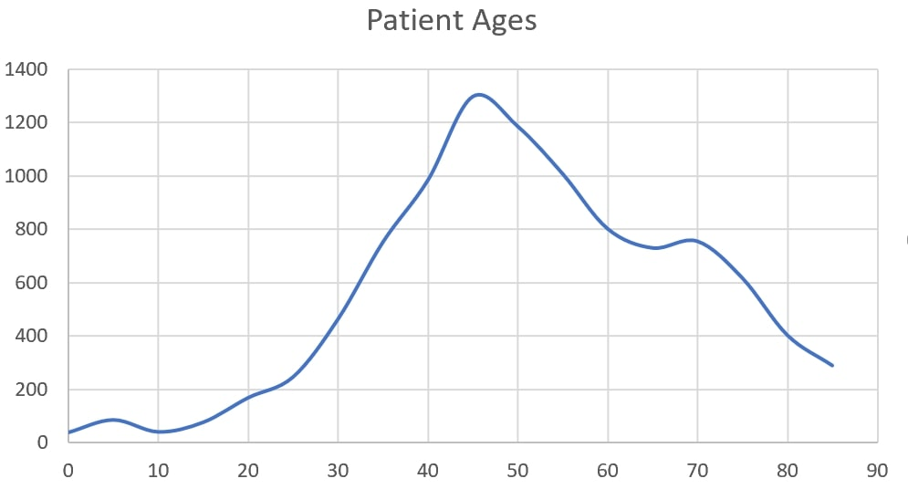
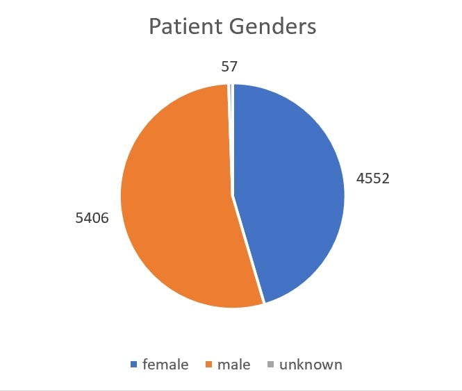
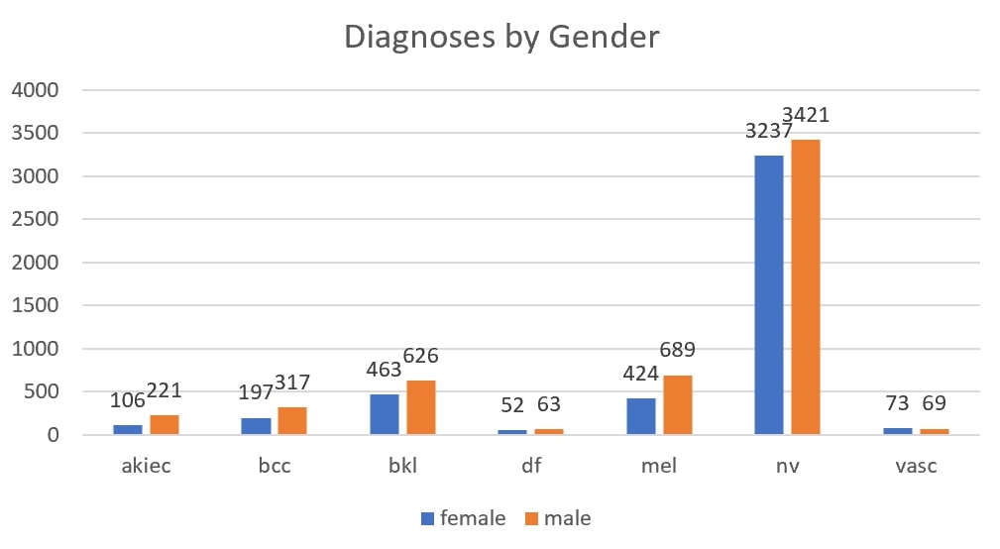

Visuals




As part of our final project at the Data Science and Analytics Bootcamp at Georgia Tech, we decided to create and train a neural network using the Skin Cancer MNIST: HAM10000 dataset found on Kaggle. The dataset consists of 10,015 dermatoscopic images from different populations, with parameters of lesion_id, image_id, diagnosis (dx), diagnosis type (dx_type), age, sex, and localization of lesion.
We used Amazon AWS RDS MySQL to host our database and AWS EC2 to create a server for our web application. We created 2 models that trained sequentially - the first is an image classification model using the skin lesion images that results in 7 outputs of dx; the second is a logistic regression model that trained on the outputs of the first model and the parameters (age, sex, localization of lesion).
https://www.kaggle.com/kmader/skin-cancer-mnist-ham10000
https://dataverse.harvard.edu/dataset.xhtml?persistentId=doi:10.7910/DVN/DBW86T • Tschandl, P., Rosendahl, C. & Kittler, H. The HAM10000 dataset, a large collection of multi-source dermatoscopic images of common pigmented skin lesion. Sci. Data 5, 180161 (2018). doi: 10.1038/sdata.2018.161